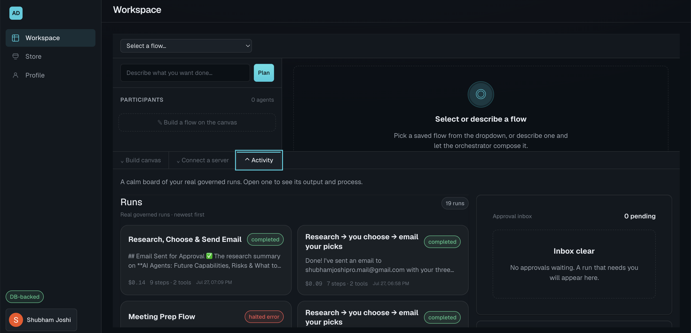

AgentDock
A control plane for AI agents that can use real tools while keeping permissions, budgets, and approval rules outside the prompt.
Teams can let an AI draft, search, or act while keeping consequential steps behind enforceable rules and human approval.
Built the full prototype: model backed flow planning, default deny policy resolution, governed MCP execution, approval workflows, encrypted credentials, durable jobs, crash recovery, idempotent external actions, and live run events.

Real governed runs expose steps, tools, cost, status, failures, and approval state. This is the operational surface behind the control plane concept.
Solo project · Product direction, system architecture, frontend, backend, policy engine, integrations, and test suite.